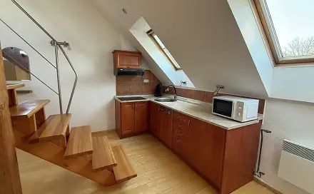
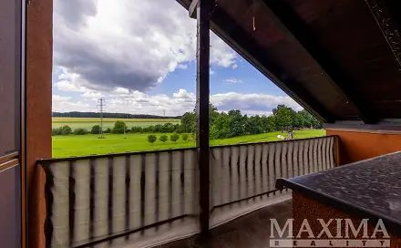
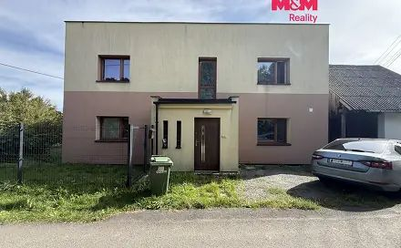
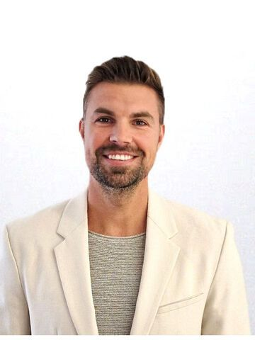
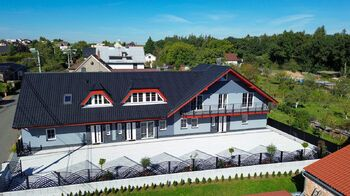

Photo unavailable
New listing
Pronájem domu Balbínova, Ostrava - Petřkovice u Ostravy, Moravskoslezský kraj
Pronájem domu Balbínova, Ostrava - Petřkovice u Ostravy, Moravskoslezský kraj
Not stated → 15,000 CZK
Original advert ↗Daily market update · 2026-11-03 · Ostrava + 15 km
Data limitation: Prices are advertised, not completed transaction prices. Disappeared adverts are NOT proof of sold or rented status. Search radius may be unverified for individual locations. Additional monthly rental charges are not reliably supplied in these search cards.
Pronájem domu Balbínova, Ostrava - Petřkovice u Ostravy, Moravskoslezský kraj
Not stated → 15,000 CZK
Original advert ↗
pronájem vily 80 m² Wolkrova, Ostrava - Hulváky 16 000 Kč/měsíc
Not stated → 16,000 CZK
Original advert ↗
pronájem domu 100 m² s pozemkem 826 m² Ostrava - Nová Bělá 14 000 Kč/měsíc
Not stated → 14,000 CZK
Original advert ↗
pronájem domu 105 m² s pozemkem 426 m² Ostrava - Nová Bělá 20 000 Kč/měsíc
Not stated → 20,000 CZK
Original advert ↗Pronájem domu/vily, 179 m²
Not stated → 40,000 CZK
Original advert ↗Pronájem domu/vily, 270 m²
Not stated → 37,000 CZK
Original advert ↗
Pronájem domu/vily, 88 m²
Not stated → 25,000 CZK
Original advert ↗Pronájem domu/vily, 68 m²
Not stated → 22,900 CZK
Original advert ↗Pronájem domu/vily, 91 m²
Not stated → 28,000 CZK
Original advert ↗
Pronájem domu/vily, 100 m²
Not stated → 37,000 CZK
Original advert ↗
Pronájem domu/vily, 129 m²
Not stated → 42,000 CZK
Original advert ↗Pronájem domu/vily, 214 m²
Not stated → 47,000 CZK
Original advert ↗
onájem domu 100 m², Ostrava (ID 306-NP83774) ulice Hrabek, Ostrava – městská část Plesná 37 000 Kč ( za měsíc)
Not stated → 37,000 CZK
Original advert ↗
onájem domu 129 m², Ostrava (ID 306-NP83777) ulice Hrabek, Ostrava – městská část Plesná 42 000 Kč ( za měsíc)
Not stated → 42,000 CZK
Original advert ↗
onájem domu 214 m², Ostrava (ID 306-NP83778) ulice Hrabek, Ostrava – městská část Plesná 47 000 Kč ( za měsíc)
Not stated → 47,000 CZK
Original advert ↗